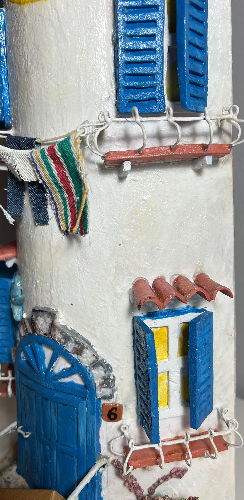

Storia

×

Lo spunto per questa tegola è arrivato dal ricordo di una vacanza nel Salento, ho cercato di ricrearne i colori, le sensazioni e le emozioni visssute in quei giorni; il sapore della salsedine che si respira dove tutto sa di mare.

×

La ricerca dei particolari e delle proporzioni rende l'immagine reale, decisamente verosimile. Questa tegola fa parte della serie orologi, monta un meccanismo con movimento fluido della sfera dei secondi. Le piccole ringhiere alle finestre sono in metallo, i particolari come le imposte e la porta sono in polistirene e le piccole tegole sono in terracotta. Tutti i colori sono in acrilico e la copertura è realizzata in vernice trasparente protettiva.